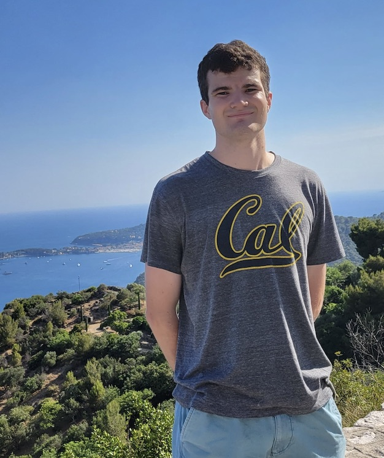

PhD Candidate, Department of XUniversity of Y
Email · CV · ORCID
I'm a fifth year math PhD student, advised by David Nadler. I'm interested in algebraic geometry and homotopy theory, in particular algebraic K-theory and motivic homotopy theory.